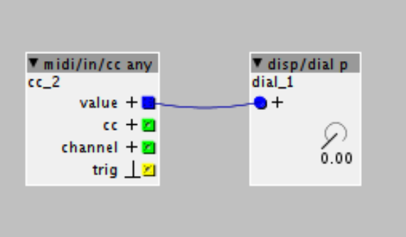

I'm having an issue connecting a Novation Launchkey Mini MK2 to the Axoloti core on a Windows 10 Surface Book using Axoloti build version 1.0.12-0.
When using the knobs faster than a slow speed, I "crash" the patch. No more midi messages will be interpreted until the controller is power cycled by removing the USB cable between the Axoloti and the MK2. I've tried two different Axoloti core boards, I've cycled through 5 different USB cables that I've used on development projects and am relatively sure they're okay. I've applied external 12V power for extra current.
When using the keyboard, or buttons, I can bang on them as fast as I can, and have not been able to crash a patch.
It doesn't matter what code is in the "MIDI Code" section. I've commented everything out except "ntrig = 1;" and the patch will crash.
Here is an example patch that will crash:

I've looked through the forum and found @mongrol confirms that the MK2 works with the Axoloti core.
I also found this topic that sounds like progress has been made on version https://github.com/axoloti/axoloti/releases/tag/1.0.11
Can anyone verify on their own MK2 that the knobs can be turned rapidly with no drop-out or patch crashes? Can anyone think of anything else for me to try?